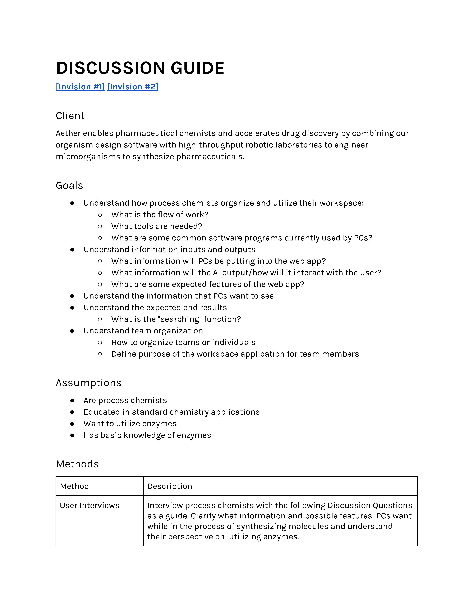
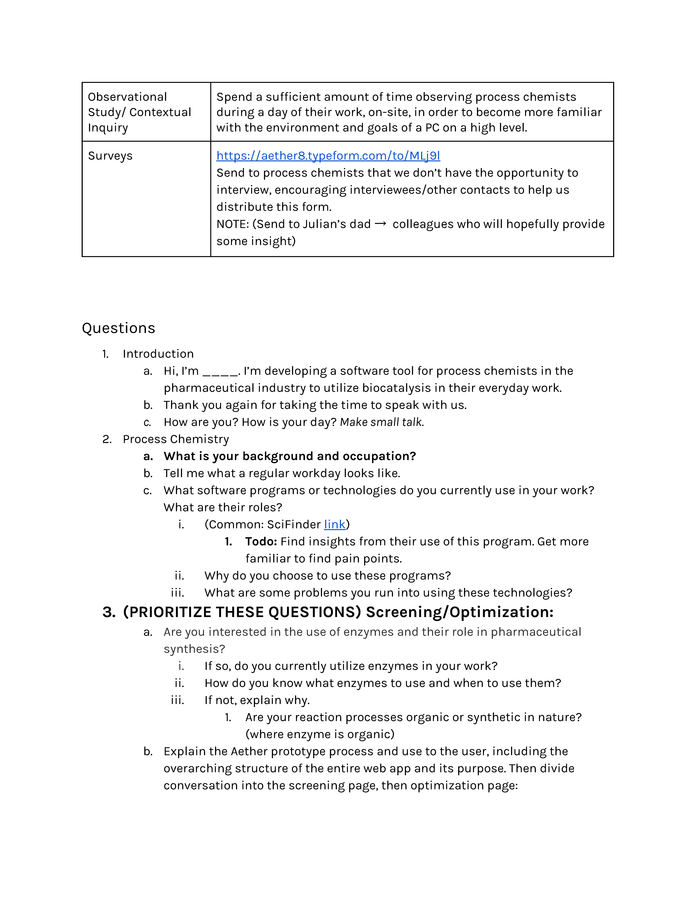
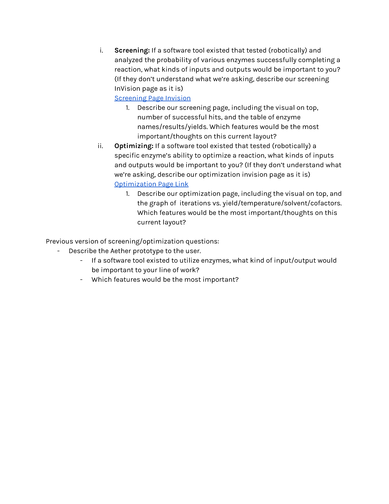
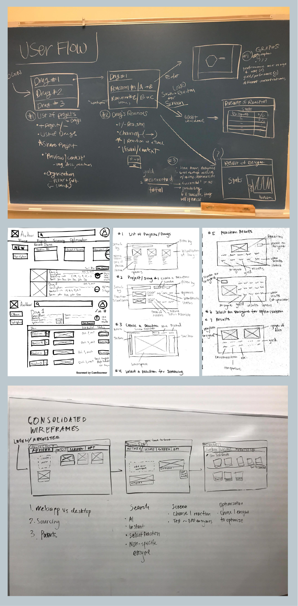
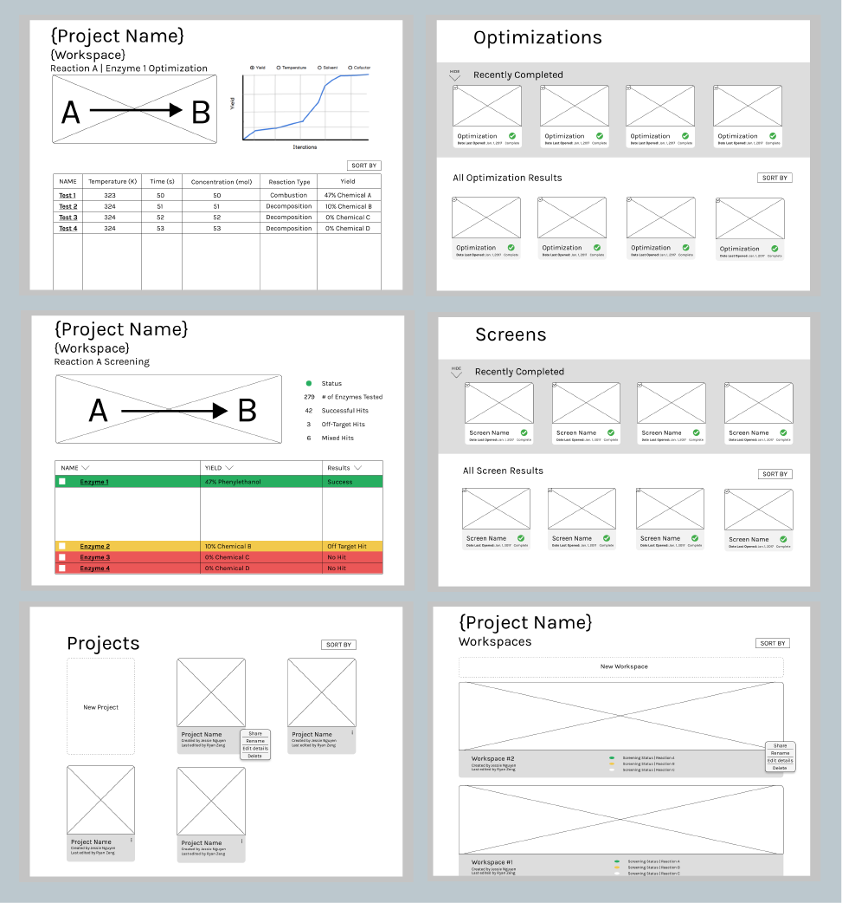
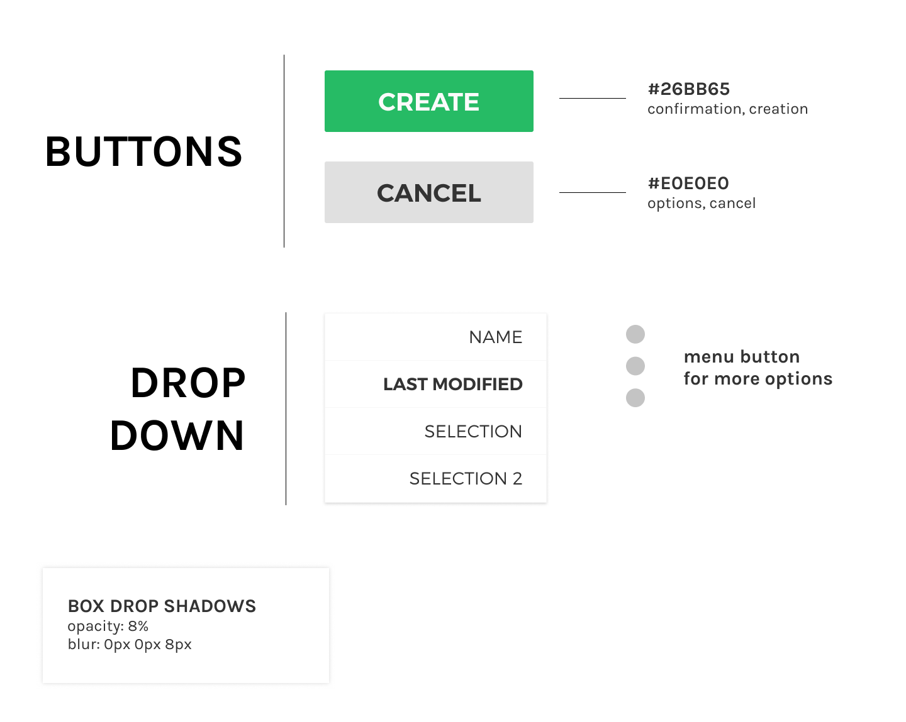
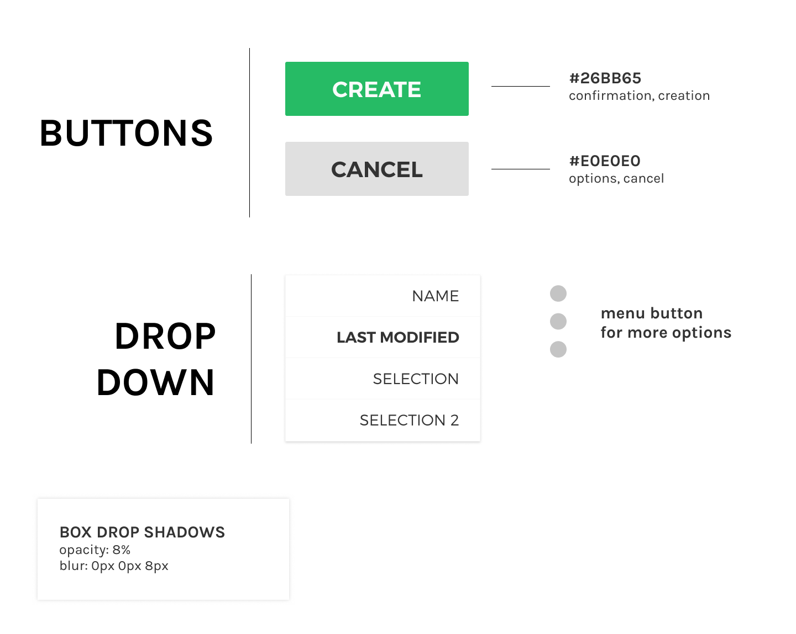
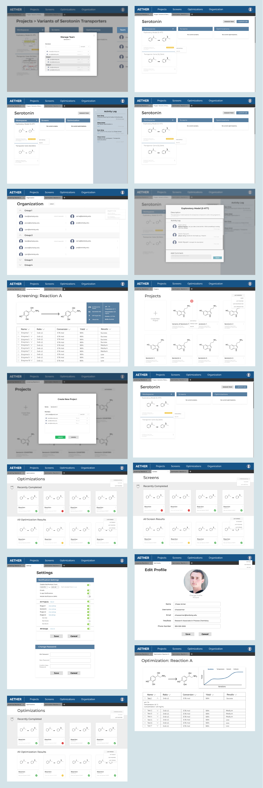

Aether
During the process of manufacturing a drug, chemists reach a stage in which they attempt to find the most cost-efficient and highest yielding combination of chemicals to create a specified final molecule. Currently, this testing and iteration takes place over the course of months and involves complex decision-making with minimal technology. With Aether’s use of robotics and data modeling, this timeline can be shorteed, projects or data can be easily managed, and millions of dollars can be saved.
PROBLEM
Our team of four designers was tasked with designing the interface for Aether's web app that will allow process chemists to use their services to find enzymes to shorten their process for molecule syntesis.
USER RESEARCH
We interviewed process chemists in the pharmaceutical industry in order to get an idea of their everyday workflow and identify possible pain points. Since none of us are chemists, and lacked technical understanding, we were particularly interested in what types of data input and output process chemists expected/wanted from such a service.



INSIGHTS
We did phone interviews with several chemists and took away some notable quotes:
We also came with a list of data process chemists wanted/expected including:
- "There is a lot of skepticism in predictive software. Chemists want to see the justification and decision-making process on how the predictions add up."
- "I usually keep track of data by writing it down in my notebooks"
- "I would want more information about how enzymes work in biocatalyss because it is not as accessible at the moment"
- "I usually keep track of data by writing it down in my notebooks"
- "I would want more information about how enzymes work in biocatalyss because it is not as accessible at the moment"
Here were some of our key takeaways from the interviews:
- Skeptical of predictive software along with the security of their work
- Typically only use physical notebooks or Microsoft Suite to keep track of data
- Primarily identifies molecules visually rather than by their titles - Prefer a simple yet technical layout to keep from being too cluttered or confusing
-Web application to be adaptable to their company
- Typically only use physical notebooks or Microsoft Suite to keep track of data
- Primarily identifies molecules visually rather than by their titles - Prefer a simple yet technical layout to keep from being too cluttered or confusing
-Web application to be adaptable to their company
We also came with a list of data process chemists wanted/expected including:
- Ratio
- Conversion in mols
- Yield
- Iteration
- Temperature
- Solvent
- Cofactor
- Conversion in mols
- Yield
- Iteration
- Temperature
- Solvent
- Cofactor
IDEATION
Our team started with creating a general user flow before splitting up individually and brainstorming rough wireframes. Later we came together with our client and discussed our ideas and consolidated what worked, removed what didn't work, and got feedback on what could be added and improved.

The overall goal was to allow chemists to easily compare results of various tests, leading us to a tab-based system. During this period we also deliberated on various information hierarchies for data and project management, ranging from folders with tags to a cascading sidebar.
MID-FIDELITY
We took our sketches and digitally formalized them on Figma. We ultimately decided on a card sorting system with workspaces, screens, and optimizations integrated into each project.

FINAL SCREENS
 

Moving into our high-fidelity screens, we fleshed out the design for each project, creating a dashboard and activity log with a description and comments section. We also implemented an organization space that allows for common project groupings and team management for administrators of the company.

TAKEAWAYS
- Know what you don't know!
• Not having a background in chemistry meant asking our client what we needed to understand. It also meant figuring out the right questions to ask users.
- It's okay to go off-script if the information is relevent
• Aether's CEO would join some of our interviews in order to bridge our lack of technical understanding. He would occassionally follow up on a response or comment, and end up revealing pieces of information we never would have found with our original discussion guide.